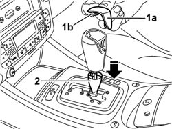
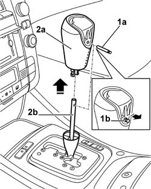

2135A16 AUTOMATIC TRANSMISSION LEVER GRIP - R.R.
- Path
- Procedures > 21 GEARBOX > 2135 automatic transmission external controls > 2135A AUTOMATIC TRANSMISSION MANUAL CONTROLS > 2135A16 AUTOMATIC TRANSMISSION LEVER GRIP - R.R.
- Kind
- repair procedure (removal / refitting; the operation number is the code)
- Applies to
- engines: 2.4 20V, 3.0 V6, 3.2 V6; all production periods
- Interactive page
- https://sloeber94.github.io/elrnDB-lThss/en/#/846478
Applies to: engines: 2.4 20V, 3.0 V6, 3.2 V6; all production periods
 Removing
Removing
 Refitting
Refitting1. Rremove the trim (1a) releasing the retaining clips (1b) from the housings on the grip.
2. Lower the metal trim located under the gear lever grip.

Applies to: engines: 2.4 20V, 3.0 V6, 3.2 V6; all production periods
1. Extract the retaining pin (1a) acting on the special reference (1b).
2. Extract the grip (2a) from the gear lever (2b) pulling it upwards.

Applies to: engines: 2.4 20V, 3.0 V6, 3.2 V6; all production periods
Refitting
Removing- Position the grip on the gear lever fitting it properly so that the opening in the grip is aligned with the opening in the gear lever.
- Insert the retaining pin via the opening in the grip.
- Lift the metal trim until it is against the gear lever grip.
- Position the trim on the gear lever grip.